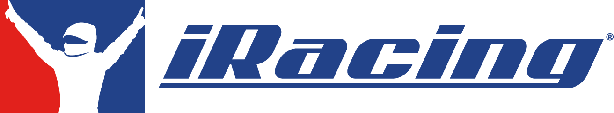
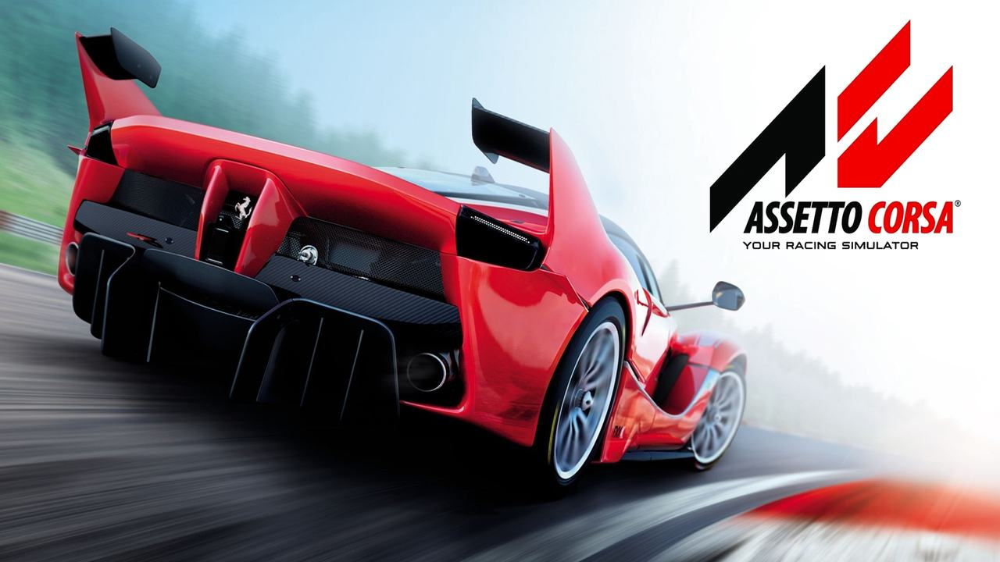

Tuning a car is not something done just in the racing sector. It is sed for any vehicle used in any scenario. Street cars, motorcycles, buses, trucks, trains, planes, and even boats. Tuning can provide a number of benefits including better gas mileage, handling, safety, speed, braking, longetivity, and performance.
In the industry, tuning is done with big and expensive equipment such as dynos, air tunnels. private tracks, and other proprietary software. For leisure use however, simulators such as iRacing and Asetto Corsa can be used to implement certain adjustments and monitor changes. Analysis software such as MoTec can be used to visualize data. Such information includes steering, throttle, and brake inputs. It also includes tire temperatures, ride heighs, spring rates, speeds, rpms, torque, horsepower, and load.
 